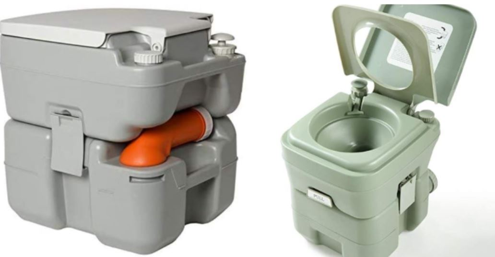
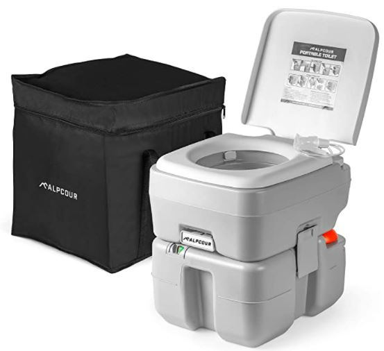
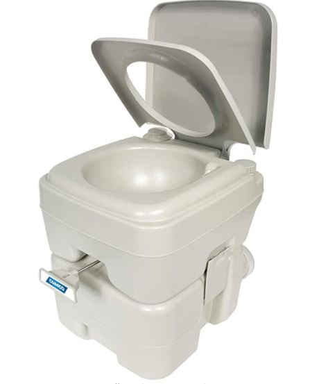
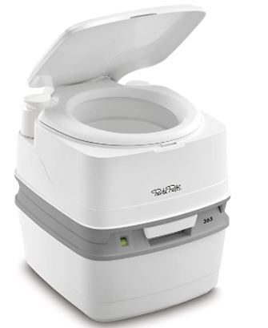
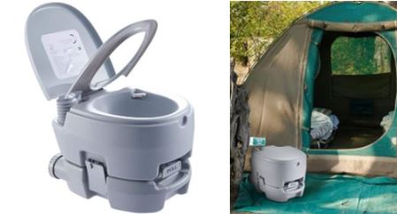
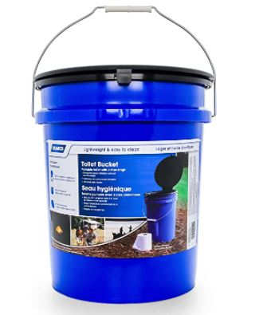
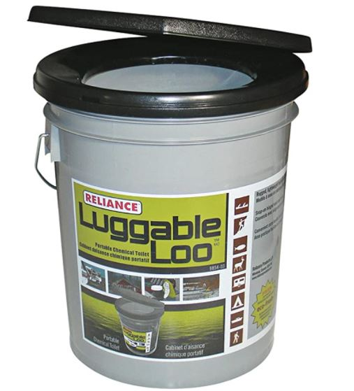
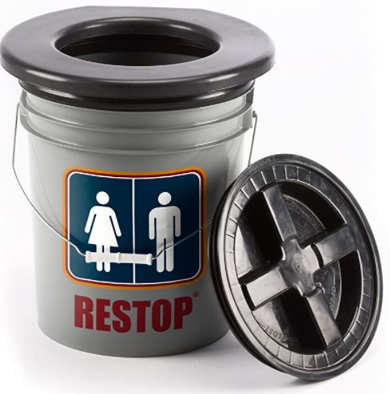

8 Best Portable Toilets for camping
What is a camping toilet?
Camping toilets allow you and your family to get rid of waste without having to go into the bushes.
Camping toilets can vary from detailed flushable systems to quite standard "wag bags," an eco-friendly double-bag system that you can make use of to lug away your waste. Primarily, there are 3 kinds of outdoor camping toilets: flushable, buckets, and collapsible. Bucket toilets are the ones you will find to be the simplest of the lot; a bucket toilet is just as it sounds; you can even build one for yourself. The foldable toilet folds for very easy transportation and generally consists of a waste bag and a seat. A flushable toilet is one of the most fancy kind and consists of a system to hold waste.
Types of Portable Camping Toilets
In everything we do, we will always want to have choices. There's nothing different when it comes to purchasing a portable toilet. Here are the choices you will have.
- Porta potty toilets
- Dry flush toilets
- They are odorless
- They are portable
- Use no form of chemicals
- They use no water
- Easily Cleaned
- Rechargeable
- Usually pre-built
- Bucket toilets
- Folding toilets
A dry flush toilet is a camping or travel-type toilet that is portable, waterless toilet that you can take with you on a trip across the country. This toilet will not smell or leak and comes in at a reasonable price.
Features of these toiletsThese are some of the simplest forms of portable toilets.
Here is a list of some of my favorite camping toilets. I will go over their pros and cons in more detail below.
| Toilet Brand | Weight | Supported Weight | Flush Type | Flush Tank Volume | Waste Tank Volume | Waste Disposal Spout |
|---|---|---|---|---|---|---|
| Alpcour Portable Toilet | 11 lbs. | 440 lbs. | Piston pump | 3.2 gal. | 5.3 gal. | Yes |
| Thetford 92820 Porta Potti 365 | 10.28 lbs. | 350 lbs. | Piston | 4 gal. | 5.5 gal. | No |
| Camco Standard Portable Toilet | 10.8 lbs. | 330 lbs. | Bellow-type | 2.5 gal. | 5.3 gal. | No |
| VONOYA Lightweight Portable Toilet | 10.4 lbs. | 400 lbs. | Piston-Type | 3.2 | 3.2 | No |
Alpcour Portable Toilet

- Easy, hygienic, quick cleanup
- Comfy Seat
- Perfectly durable and ready for the outdoors
- Includes a piston-pump which does not require any batteries
- Price might be too how for some campers
- Water may be needed to fully clean out waste
- Outdoor Activities
- Healthcare
- Recreational Vehicles
- Trucking
- Marine
- Toddler Training
- Vans
Camco Standard Portable Toilet

- Looks a lot like a regular toilet
- The manual lever makes it easy to flush
- Takes little time to set up
- Very strong build quality. Can support users that weigh 330 pounds.
- Item may burp occasionally when you flush
Thetford 92820 Porta Potti 365

- Recreational Vehicles
- Healthcare
- Outdoor Activities
- Marine
- Trucking
- Toddler Training
- Vans
- Resembles a regular toilet
- Easy to flush
- Easy set up
- Can support users that weigh 350 pounds.
- Product may burp from time to time
VONOYA Lightweight Portable Toilet

Its seat is large with a surface area of 14.4 inches broad by 16.3 inches long, all raised to an height of roughly 16.5 inches. But wait, that's not all, the Alpcour camping toilet has many features which makes for a home type experience.
Its seat is large with a surface area of 14.4 inches broad by 16.3 inches long, all raised to an height of roughly 16.5 inches. But wait, that's not all, the Alpcour camping toilet has many features which makes for a home type experience. You will find that most camping toilets stand at 15 inches, but to have a more pleasant experience on the outside, you should opt for a camping toilet with a height of 16 to 18 inches. When it comes to comfortable exterior johns, the Alpcour Portable Toilet is one of the best you can purchase.
ProsApplications for this product
The majority of people that get turned off from making use of camping toilets is because of the headaches that are usually associated with getting them clean and moving them around. Camco's camping toilet is developed around fixing such concerns. Clearing the holding tank is incredibly easy on this portable toilet as you just need to unlock it and move it around using the handle which is very comfortable to hold. The toilet comes with a sliding seal on the front that's included to trap the smell of waste on the inside.
This camping toilet is on the cheaper side. You will certainly appreciate its usefulness with its two-part arrangement, lightweight, and how campact it actually is.
ProsThe Thetford 92820 Porta Potti 365 is a family-sized flushable camping toilet that includes well-thought out options to boost your outside living. As an example, this camping toilet has a piston pump flushing system which does not require any type of batteries. The pour out spout will also make emptying this portable toilet a breeze.
Applications
This portable camping toilet has a full-sized seat and lid that enables anyone to use it comfortably. Able to handle 400 pounds means that this is a sturdy portable toilet. There is a leak proof cap along with a slide valve that allows this camping toilet to seal away any smells that may be present.
| Toilet Brand | Weight | Supported Weight | Height | Capacity (Gallons) |
|---|---|---|---|---|
| Camco Portable Toilet Bucket | 4 lbs. | 300 lbs. | 16 in. | 5 |
| Reliance Products Luggable Loo | 3 lbs. | 300 lbs. | 15.56 in. | 5 |
| Restop Commode | 3.6 lbs. | 300 lbs. | 16 in. | 5 |
| Reliance Products Hunter’s Loo | 2.65 lbs. | 300 lbs. | 15.4 in. | 5 |
Camco Portable Toilet Bucket

Reliance Products Luggable Loo

Restop Commode

Reliance Products Hunter’s Loo
This portable camping toilet has a full-sized seat and lid that enables anyone to use it comfortably. Able to handle 400 pounds means that this is a sturdy portable toilet. There is a leak proof cap along with a slide valve that allows this camping toilet to seal away any smells that may be present.
This simple but very helpful camping toilet comes in at less than 50 dollars on amazon.
Waste disposal is made easy with these types of toilets. You use a Reliance Double Doodie Bags to catch waste in the bucket for easy disposal later.
This camping toilet comes in at a great price of 49 on amazon.
Waste disposal is made easy with these types of toilets. You use a Reliance Double Doodie Bags to catch waste in the bucket for easy disposal later. I like the restop commode as it comes with a very comfortable seat.
This camping toilet comes in at a great price of 49 on amazon.
You can easily use the reliance's standard Double doodle bag with this product. Coming in at a great price, it's almost hard to complain about anything that this portable toilet has to offer.
You can purchase one on amazon for the small price of $19.95.
| Manufacturer | Camco |
|---|---|
| Brand | Camco |
| Model | 41549 |
| Item Weight | 4 pounds |
| Product Dimensions | 13.4 x 16.1 x 13.8 inches |
| Item model number | 41549 |
| Is Discontinued By Manufacturer | No |
| Manufacturer Part Number | 41549 |
| Cover Included | Toilet bags(10) |
Conclusion
Camping toilets are a must have for someone on the go and without the necessity of a usable toilet in their recreational vehicle. One of these toilets is perfect for someone who only have a simple recreational vehicle. Be sure tp do your research on the type of portable toilet you want before making a final decision.